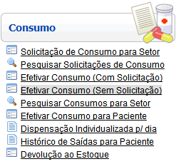
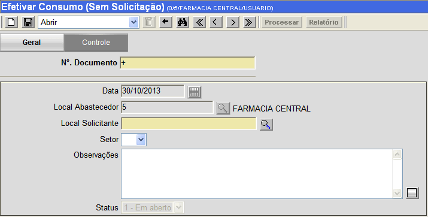
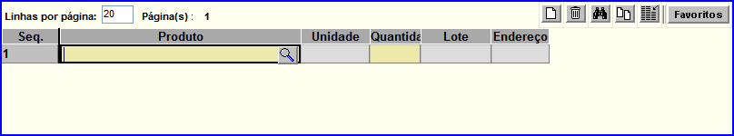

|
Efetivar Consumo (Sem Solicitação) [ Voltar ]Esta tela permite que o usuário realize consumos sem a necessidade de solicitações. O formulário "Efetivar Consumo (Sem Solicitação)" encontra-se dentro do menu "Consumo". 
Após clicar no formulário, o sistema abrirá a seguinte tela: 
Siga os passos abaixo para efetivar o consumo. 1º Passo: preencha as informações do consumo. Os campos em amarelo são obrigatórios.
2°
Passo: clique no botão
 [Salvar] para
salvar os dados inseridos no consumo. Após salvar o
documento, uma grade é exibida na parte inferior da tela para a
inclusão dos produtos relacionado ao consumo. [Salvar] para
salvar os dados inseridos no consumo. Após salvar o
documento, uma grade é exibida na parte inferior da tela para a
inclusão dos produtos relacionado ao consumo.3° Passo: especifique os produtos para este consumo. Clique no botão  [Pesquisar]
para selecionar o produto a partir de uma listagem contendo todos os
produtos cadastrados. Em seguida, informe a quantidade desejada.
Clique no botão [Pesquisar]
para selecionar o produto a partir de uma listagem contendo todos os
produtos cadastrados. Em seguida, informe a quantidade desejada.
Clique no botão  [Novo] caso deseje inserir mais de um produto no consumo ou pressione a tecla "Enter". Utilize a tecla "Tab" para navergar pelos campos. [Novo] caso deseje inserir mais de um produto no consumo ou pressione a tecla "Enter". Utilize a tecla "Tab" para navergar pelos campos.
4° Passo: clique no botão [Salvar] para salvar os itens do consumo.5° Passo: clique no botão  [Processar] para concluir o
consumo. [Processar] para concluir o
consumo. 6º Passo (Opcional): Se desejar, clique no botão  [Relatório] para gerar e imprimir o relatório
"CONSUMO PARA SETOR ATENDIDO". [Relatório] para gerar e imprimir o relatório
"CONSUMO PARA SETOR ATENDIDO". |